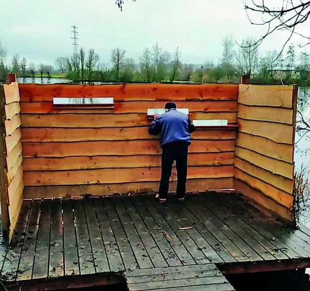
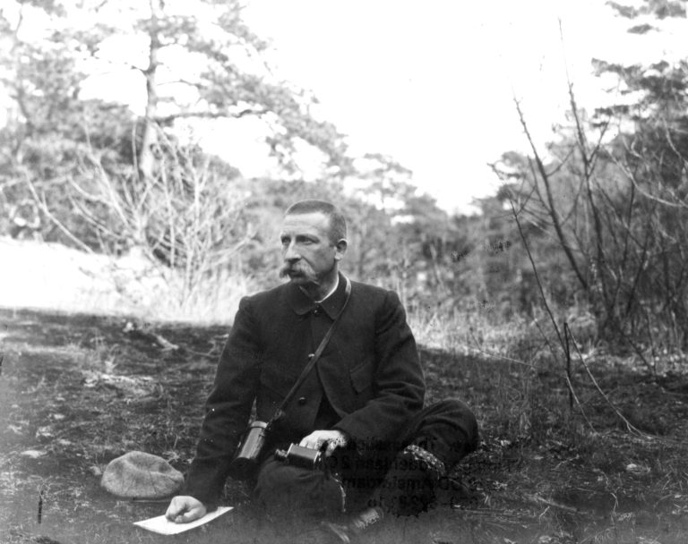
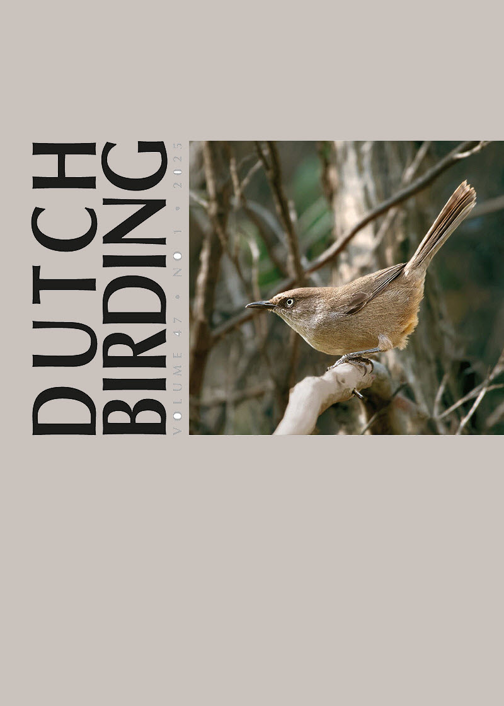
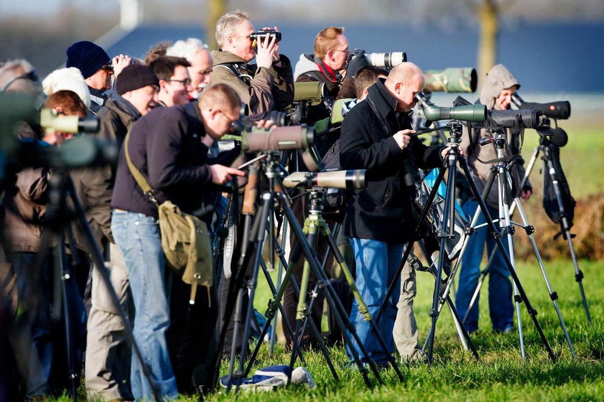
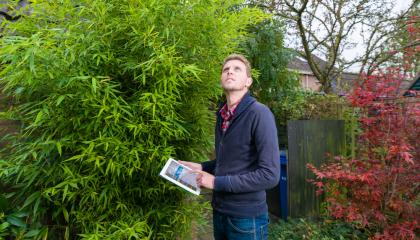

Vogelen als hobby
Door: Dick van Braak
Laatste update: 25-8-2025
Inleiding
Op deze pagina wordt beschreven wat vogelen nu eigenlijk is. Wanneer is dat nu eigenlijk begonnen en wat is
er verder over te vinden?
Pas op: als dit virus je eenmaal te pakken heeft, dan ga je menig uurtje in de
natuur doorbrengen! Een prachtige hobby die nog gezond is ook!
Overzicht
Vogelen
Vogelen is het bekijken, op naam brengen, en tellen van vogels, het inventariseren van de vogels
in gebieden,
en het doen van onderzoek naar bijvoorbeeld gedrag en ecologie. De beoefenaars van deze hobby worden wel
vogelaars of amateurornithologen genoemd. Je zou vogelaar als volgt kunnen omschrijven: iemand
die min
of meer gestructureerd kijkt naar vogels in het open veld.

Een belangrijk doel van het vogelen is het verwerven en toetsen van kennis van vogels, ook van
de algemenere
soorten. Voor het vogelen is in eerste instantie weinig anders nodig dan interesse, een goed
waarnemingsvermogen, een vogelgids of een vogel-app op de telefoon voor het op naam brengen van soorten, en
een verrekijker.
Geschiedenis
Het kijken naar vogels als hobby heeft een traditie die teruggaat tot zeker het begin van de negentiende
eeuw. In de loop van de negentiende eeuw ontstonden er op verschillende plaatsen in de wereld organisaties
van vogelkundigen. In Nederland was dit de Nederlandse Ornithologische Vereniging. In de loop van de
twintigste eeuw verschenen steeds meer vogelgidsen. Voor de Tweede Wereldoorlog waren er hiervan nog
relatief weinig.
Hierbij willen we Jac. P. Thijsse (1865 - 1945) toch niet onbesproken laten. Hij stond aan de wieg van de
Vereniging Natuurmonumenten
en zette zich met hart en ziel in vor het behoud van de natuur in Nederland. Met zijn Verkadealbums en zijn
vele andere publicaties wist hij een breed publiek te enthousiasmeren voor zijn passie: het leven van
planten en dieren.

In de loop van de twintigste eeuw werden veldkijkers en veldgidsen betaalbaar voor iedereen. Ook werden er
steeds meer systematische waarnemingen gedaan, die ook vastgelegd werden. Daarvan was in de begintijd nog
weinig sprake. Er waren al wel enkele bekende gelegenheden, waar groepjes vogelaars elkaar regelmatig
ontmoetten en informatie uitwisselden. Met het publiceren van ervaringen in (regionale) tijdschriftjes werd
omstreeks 1900 een begin gemaakt.
Nog in de jaren 1970 was het aantal waarnemers en het aantal waarnemingen uiterst beperkt. De eerste atlas
van de broedvogels van Noord-Holland (1971) kwam tot stand op basis van de waarnemingen van vijfendertig
vogelaars.
Aanvankelijk werd er vrijwel alleen naar vogels gekeken door mannen. Het aandeel van vogelende vrouwen is aanzienlijk toegenomen.
De uitrusting
Voor de uitrusting is weinig nodig. Het begint met een stel goede ogen. Wil je het beter kunnen zien, dan is
een verrekijker ook zeker nodig. Kijk je veel in het open veld of aan de kust dan is ook een telescoop geen
overbodige luxe.
Wil je je waarneming vastleggen voor een goede determinatie, dan is ook een goede camera noodzakelijk.
Uiteraard ontbreekt dan een vogelboek en een vogeldagboekje niet. Ook een een geluidsrecorder, voor opname
van de zang (determinatie) kan handig zijn.
Je kan het dus zo duur maken als je zelf wilt. Belangrijk: ook met weinig geld kan je deze prachtige hobby
uitvoeren!
Twitchen
Twitchen is een vorm van 'soortenjagen'. Het woord is afkomstig uit het Engels en overgenomen
door vogelaars
in Nederland en België. Twitchen betekent het gericht opzoeken van een bijzondere vogel, geïnformeerd door
anderen. De stichting Dutch Birding Association publiceert een tweemaandelijks tijdschrift, Dutch Birding.

Hierin worden waarnemingen van bijzondere vogels vermeld en identificatieartikelen aangeboden over moeilijk
te determineren soorten. Ook in andere bladen, zoals regionale en provinciale tijdschriften, worden
waarnemingen van de bijzondere soorten gepubliceerd. Twitchers maken vaak speciale afspraken
met hun
werkgever om in geval van bijzondere waarnemingen direct op pad te kunnen gaan.

Ook het woord (vogel)spotten wordt weleens, vooral door leken, in een enigszins vergelijkbare betekenis
gebruikt. Daarbij gaat het om een minder georganiseerde en meer toevallige wijzen van 'soortenjagen', veelal
met een nadruk op de zeldzamere soorten. Vogelaars gebruiken het woord spotten enkel om het nachtelijke
zoeken naar dieren, met behulp van een spot, aan te duiden.
Onderzoek door vrijwilligers
Sovon Vogelonderzoek Nederland is de koepelorganisatie voor honderden vogelaars die onderzoek verrichten op vrijwillige basis. In 1987 publiceerde Sovon de Winter- en trekvogelatlas met per maand kaartinformatie waar zowel broed- als trekvogels zich bevonden. In 2002 verscheen opnieuw een atlas over de broedvogels dankzij medewerking van een groot aantal vrijwilligers waarvan het veldwerk door Sovon werd gecoördineerd. In 2012 startte Sovon opnieuw een atlasproject waarin het voorkomen van zowel broedvogels als overwinterende vogels in kaart wordt gebracht. Het veldwerk, weer door een groot leger vrijwilligers, werd tussen 2012 en 2015 verricht; deze atlas verscheen in 2018. Daaraast is er Nederlandse Ornithologische Unie (NOU) die veel amateurs onder haar leden telt.

Externe links